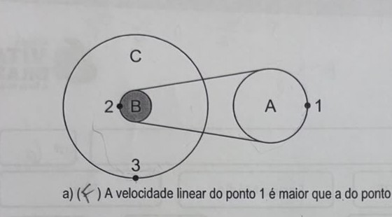
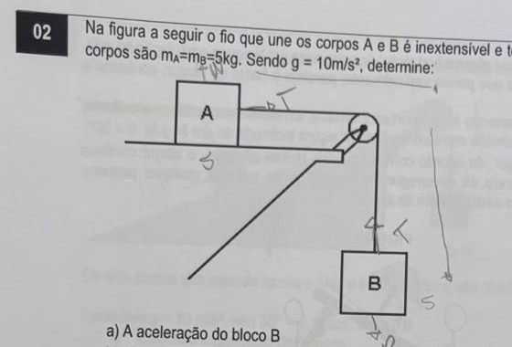
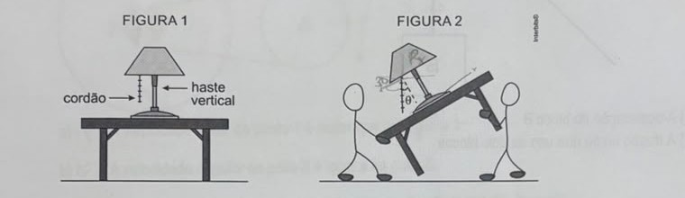
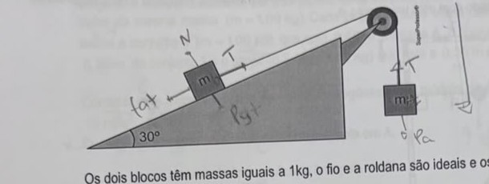
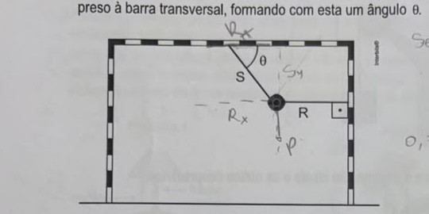
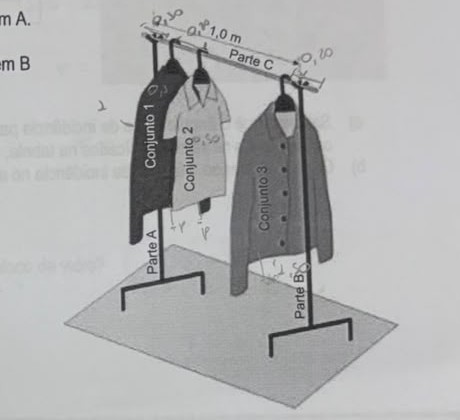
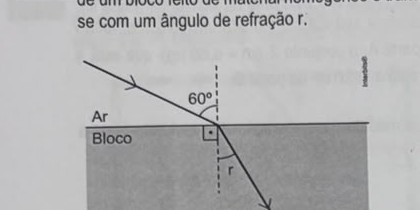
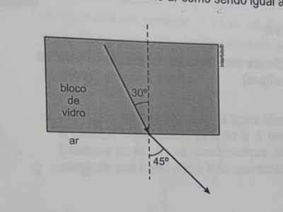
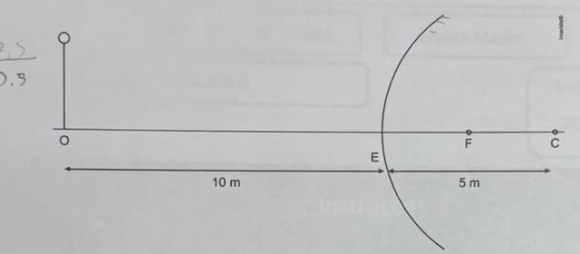

Professores: Jefferson e Fred · AC1 · Simulado Vital
A figura a seguir ilustra três polias A, B e C executando um movimento circular uniforme. A polia B está fixada à polia C e estas ligadas à polia A por meio de uma correia que faz o sistema girar sem deslizar. Sobre o assunto, complete com verdadeiro (V) ou falso (F) as proposições.

a) ( ) A velocidade linear do ponto 1 é maior que a do ponto 2.
b) ( ) A velocidade angular da polia B é igual a da polia C.
c) ( ) A velocidade linear do ponto 3 é maior que a velocidade escalar do ponto 1.
d) ( ) A frequência de rotação da polia C é maior do que a frequência de rotação da polia A.
B e C giram juntas (mesmo eixo, "fixadas") — sempre têm a mesma velocidade angular, mas como C tem raio maior que B, a velocidade linear na borda de C é maior que na borda de B. A correia liga B a A sem deslizar — isso iguala a velocidade linear no ponto de contato de cada uma (ponto 2 em B = ponto 1 em A).
a) Falso. v1 (em A) = v2 (em B), porque estão ligados pela mesma correia — não é "maior", é igual.
b) Verdadeiro. B e C são fixadas uma à outra (mesmo eixo) — sempre giram com a mesma velocidade angular, independente dos raios.
c) Verdadeiro. v3 e v2 estão na mesma polia (B/C, mesma ω), mas o ponto 3 tem raio maior (está na borda de C) que o ponto 2 (borda de B) — logo v3 > v2 = v1.
d) Verdadeiro, pela figura. Como ω_B = ω_C e a correia dá v_A·r_A = v_B·r_B, se o raio de A for maior que o raio de B (parece ser o caso pela figura), então ω_A < ω_B = ω_C — ou seja, a frequência de C é maior que a de A. Esse item depende de comparar os raios de A e B direto na sua figura impressa — confira antes de confiar 100% nessa letra.
Na figura a seguir o fio que une os corpos A e B é inextensível e tem massa desprezível. As massas dos corpos são mA=mB=5kg. Sendo g = 10m/s², determine:

a) A aceleração do bloco B
b) A tração no fio que une os dois blocos
Sem atrito citado, então: para B (desce): P_B - T = m_B·a. Para A (é puxado na mesa): T = m_A·a. Somando as duas: P_B = (m_A+m_B)·a → 50 = 10·a → a = 5 m/s².
Substituindo: T = m_A·a = 5×5 = T = 25 N.
Um abajur está apoiado sobre a superfície plana e horizontal de uma mesa em repouso em relação ao solo. Ele é acionado por meio de um cordão que pende verticalmente, paralelo à haste do abajur, conforme a figura 1.
Para mudar a mesa de posição, duas pessoas a transportam inclinada, em movimento retilíneo e uniforme na direção horizontal, de modo que o cordão mantém-se vertical, agora inclinado de um ângulo θ = 30°, constante em relação à haste do abajur, de acordo com a figura 2. Nessa situação, o abajur continua apoiado sobre a mesa, mas na iminência de escorregar em relação a ela, ou seja, qualquer pequena inclinação a mais da mesa provocaria o deslizamento do abajur.

Calcule:
a) o valor da relação N₁/N₂, sendo N₁ o módulo da força normal que a mesa exerce sobre o abajur na situação da figura 1 e N₂ o módulo da mesma força na situação da figura 2.
b) o valor do coeficiente de atrito estático entre a base do abajur e a superfície da mesa.
Como o cordão fica vertical e a haste do abajur acompanha a inclinação da mesa, o ângulo entre os dois (θ=30°) é a própria inclinação da mesa em relação à horizontal.
a) Na Figura 1 (mesa na horizontal): N₁ = P (peso todo apoiado na normal). Na Figura 2 (mesa inclinada a 30°): N₂ = P·cos(30°). Então N₁/N₂ = 1/cos(30°) = 2/√3 ≈ 1,15.
b) Na iminência de escorregar, o atrito está no máximo: fat = μ·N₂. Como o movimento é uniforme (equilíbrio), fat equilibra a componente do peso ao longo da mesa: fat = P·sen(30°). Igualando: P·sen(30°) = μ·P·cos(30°) → μ = tan(30°) = √3/3 ≈ 0,58.
O sistema representado na figura é abandonado com os blocos nas posições indicadas.

Os dois blocos têm massas iguais a 1kg, o fio e a roldana são ideais e os atritos desprezíveis.
Considere g = 10 m/s², sen 30° = 0,5; cos 30° = 0,8
a) Calcule a aceleração dos blocos
b) Em uma nova situação, considere a existência de atrito entre o bloco e o plano inclinado, cujo coeficiente de atrito vale μ = 0,5. Calcule a nova aceleração dos blocos.
Componente do peso do bloco no plano: Px = m·g·sen(30°) = 1×10×0,5 = 5N. Peso do bloco pendurado: P = m·g = 10N. Como P (10N) > Px (5N), o bloco pendurado desce e o bloco no plano sobe o plano.
a) Sem atrito: P - Px = (m+m2)·a → 10-5 = 2a → a = 2,5 m/s².
b) Com atrito (usando exatamente os valores dados no enunciado, cos30°=0,8, não o valor exato √3/2): N = m·g·cos(30°) = 1×10×0,8 = 8N. fat = μ·N = 0,5×8 = 4N. Como o bloco tende a subir o plano, o atrito age freando (para baixo do plano), somando-se à resistência: P - Px - fat = (m+m2)·a → 10-5-4 = 2a → 1 = 2a → a = 0,5 m/s².
Em uma instalação artística, uma bola de handebol, de massa 400 gramas, foi pendurada na baliza por meio de dois fios, R e S. O fio R é horizontal e está preso a um dos postes verticais, enquanto o fio S está preso à barra transversal, formando com esta um ângulo θ.

Sabendo que g = 10 m/s², sen θ = 0,8 e que cos θ = 0,6, calcule:
a) a intensidade, em newtons, da força que o fio R aplica na bola;
b) a intensidade, em newtons, da força que S aplica na bola.
Atenção com a conversão de unidade: 400 gramas = 0,4 kg (não 4kg — é fácil errar essa conversão). Peso: P = m·g = 0,4×10 = 4N.
No nó dos fios, em equilíbrio: componente vertical de S equilibra o peso (Sy = P), e componente horizontal de S é equilibrada pelo fio R (R = Sx).
Sy = S·senθ = P → S = P/senθ = 4/0,8 = S = 5N (item b).
R = S·cosθ = 5×0,6 = R = 3N (item a).
Em uma loja três peças de roupas estão em uma arara (suporte para pendurar roupas), conforme mostra a figura. A arara é constituída por três partes, duas verticais (parte A e B) e uma na horizontal (parte C), todas de mesma massa (m = 1,00 kg). Cada peça de roupa e seu cabide formam um conjunto, então temos o conjunto 1 (m = 1,00 kg) que está 0,10 m da parte A, o conjunto 2 (m = 0,50 kg) que está a 0,20 m do conjunto 1 e o conjunto 3 (m = 1,50 kg) que está a 0,20 m da parte B.

Considerando todas as partes da arara homogêneas e o módulo da aceleração da gravidade igual a 10 m/s², calcule:
a) A intensidade da força aplicada no apoio em A.
b) A intensidade da força aplicada no apoio em B
Pela figura, a distância total entre A e B (parte C) é 1,0m. Medindo as posições a partir de A: conjunto 1 a 0,10m; conjunto 2 a 0,10+0,20=0,30m; conjunto 3 a 1,0-0,20=0,80m (bate com "0,20m da parte B"); peso da própria barra C (10N) age no centro, a 0,5m.
Pesos: barra C = 1×10=10N; conjunto 1 = 1×10=10N; conjunto 2 = 0,5×10=5N; conjunto 3 = 1,5×10=15N. Peso total = 40N, então F_A + F_B = 40N.
Torque em relação a A (equilíbrio de rotação): F_B×1,0 = 10×0,5 + 10×0,10 + 5×0,30 + 15×0,80 = 5+1+1,5+12 = 19,5 → F_B = 19,5 N (item b).
F_A = 40 - 19,5 = F_A = 20,5 N (item a).
A figura representa um raio de luz monocromática propagando-se pelo ar (n = 1), incidindo na superfície de um bloco feito de material homogêneo e transparente com um ângulo de incidência de 60° e refratando-se com um ângulo de refração r.

| r | 25,6° | 29,3° | 30,0° | 35,3° | 45,0° | 60,0° |
|---|---|---|---|---|---|---|
| sen(r) | √3/4 | √6/5 | 1/2 | √3/3 | √2/2 | √3/2 |
a) Sabendo que o ângulo limite de incidência para refração da luz desse bloco para o ar é de 30° e considerando os valores indicados na tabela, calcule o índice de refração do bloco.
b) Quando o ângulo de incidência no ar for 60°, qual o valor de r?
a) O ângulo limite (crítico) é aquele em que, saindo do bloco para o ar (n_ar=1), o raio refrata a 90°. A fórmula do ângulo limite: sen(L) = n_ar/n_bloco. Com L=30° e sen(30°)=1/2: 1/2 = 1/n → n = 2.
b) Agora a luz vai do ar (n=1) pro bloco (n=2), com ângulo de incidência 60°. Lei de Snell: n_ar·sen(60°) = n_bloco·sen(r) → 1×(√3/2) = 2×sen(r) → sen(r) = √3/4. Pela tabela, esse valor corresponde a r = 25,6°.
A figura apresenta um experimento com um raio de luz que passa de um bloco de vidro para o ar. Considere a velocidade da luz no ar como sendo igual à velocidade da luz no vácuo.

Dados: Velocidade da luz no vácuo = 3×10⁸ m/s; sen 30° = 0,50; sen 45° = 0,71.
a) Calcule o índice de refração do vidro;
b) Qual é a velocidade da luz no interior do bloco de vidro?
a) Lei de Snell na superfície vidro→ar: n_vidro·sen(30°) = n_ar·sen(45°). Com n_ar=1: n_vidro×0,5 = 1×0,71 → n_vidro = 1,42.
b) Como n = c/v: v_vidro = c/n_vidro = (3×10⁸)/1,42 ≈ 2,11×10⁸ m/s.
Um espelho esférico côncavo de distância focal 1,0 m conjuga a imagem de um objeto real de altura igual a 4mm, colocado a 2,0 m de seu vértice. Com base no exposto, determine:
a) A distância da imagem formada em relação ao espelho;
b) O tamanho da imagem conjugada e a classificação de sua natureza, orientação e fator de ampliação. (real/virtual, direita/invertida, maior/menor/igual).
a) Equação de Gauss: 1/f = 1/p + 1/p'. Com f=1,0m e p=2,0m: 1/1 = 1/2 + 1/p' → 1/p' = 1-0,5=0,5 → p' = 2,0m.
b) Ampliação: A = -p'/p = -2/2 = -1. Como p'>0, a imagem é real; como A é negativo, é invertida; como |A|=1, tem o mesmo tamanho do objeto — altura da imagem = 4mm (igual à do objeto).
Um carro estacionado tem um espelho retrovisor esférico convexo cujo raio de curvatura é de 5 m. Atrás do carro está um pedestre, a 10 m de distância desse espelho. A figura abaixo mostra o pedestre (no ponto O, representado simplificadamente apenas com corpo fino e cabeça), o espelho como uma curva (cortando a linha horizontal OC no ponto E), o ponto focal (ponto F) e o centro de curvatura do espelho (ponto C).

a) Faça um esquema, baseado na figura abaixo, representando também a imagem do pedestre (com corpo e cabeça). Justifique a posição e o tamanho da imagem usando dois raios luminosos relevantes. Descreva quais são as características da imagem (real ou virtual; direita ou invertida; maior, igual ou menor do que o pedestre). Não apresente nenhum cálculo para este item.
b) Calcule a que distância desse espelho retrovisor estará a imagem do pedestre.
a) Espelhos convexos são divergentes: pra qualquer objeto real, a imagem é sempre virtual, direita (não invertida) e menor que o objeto — não precisa de conta pra saber isso, é uma propriedade geral desse tipo de espelho.
b) Espelho convexo: R=5m, então f = -R/2 = -2,5m (negativo, convenção de Gauss). Com p=10m: 1/f = 1/p + 1/p' → 1/(-2,5) = 1/10 + 1/p' → -0,4 = 0,1 + 1/p' → 1/p' = -0,5 → p' = -2,0m. O sinal negativo confirma que a imagem é virtual, formada 2,0m atrás do espelho.